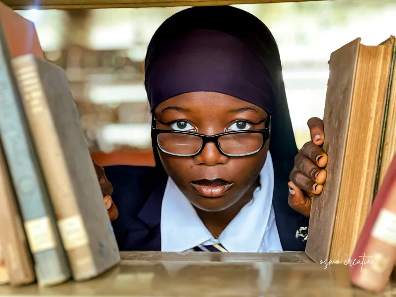

PHOTOGRAPHY & MOVING IMAGE
A feeling.
A frame.
A lasting impression.
Portraits, celebrations and stories
by Osmo, based in Lagos, Nigeria.

AN INDEPENDENT PERSPECTIVESTILLS / STORIES / MOTION
01 / SELECTED WORKA closer look.
Through my lens.
EXPLORE BY CATEGORY
There’s more to the story.Explore the full archive ↗
02 / MOVING IMAGEA DIFFERENT RHYTHM
Some stories
need motion.
Another way of seeing.
The same attention to feeling.
FILMS
A selection of films is on its way.Coming into focus.
BEHIND THE LENS
Osmo’s portrait goes hereTHE PERSON / THE PERSPECTIVE
Osmo’s portrait goes hereTHE PERSON / THE PERSPECTIVE
03 / THE PERSON BEHIND THE FRAMEHi, I’m Osmo.
Hi, I’m Osmo.
I look a little closer.
For me, it starts with noticing. The light, the expression, the small detail that gives a moment its own character.
Photography is how I hold onto it.
Let’s make something together ↗04 / COLLABORATIONS
Good company.
Selected brand collaborations will appear here.
HAVE SOMETHING IN MIND?LET’S MAKE IT HAPPEN
Let’s create
something that stays.
A portrait. A campaign. A story.
It starts with a conversation.